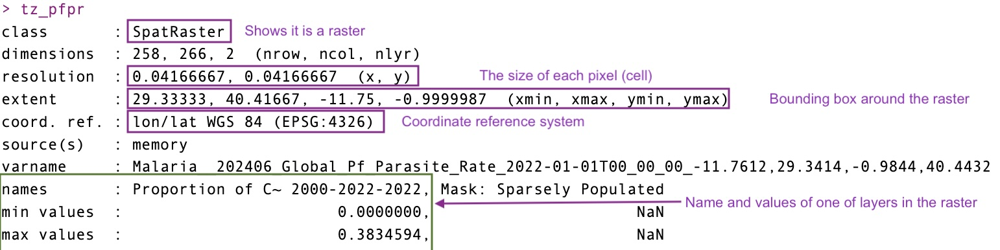

Live Session 4: Mapping in R part 2
Rasters
R
Spatial data
Data cleaning
Data visualization
GIS
Live session
Take the survey!
If you are present for the live session on Wednesday May 7th 2025, please click here to take the survey.
Important
Before you begin, we expect participants to have basic knowledge of R. If you’re new to R or would like a refresher, we recommend reviewing the first two live sessions on data visualization and data wrangling beforehand.
Prior experience with GIS data is not required, though it may be helpful. This session builds on the previous mapping in R session that introduced vector data (e.g. shapefiles). In this session we’ll focus primarily on rasters in R, with a several cool techniques to manipulate rasters to help you in your malaria modelling.
Before you start
All of the raw materials, including the R code and data, are available in the Github repository.
We will be using the tidyverse , terra, tidyterra , sf, malariaAtlas, RColorBrewer, and tmap packages in this tutorial. You may need to install them if you do not have them already. To install, run the following command in your R console: install.packages("tidyverse", "terra", "RColorBrewer", "sf", "tidyterra", "malariaAtlas"). Note that the tidyverse package is large and may take a few minutes to install.
Code from the live session is available on the Github.
Overview
Welcome back! We hope you enjoyed the first part of our Mapping in R series, which focused on vector data. In this follow-up session, we’ll dive into working with raster data in R. We’ll begin with a brief introduction to raster concepts and attributes, followed by a hands-on walkthrough using real-world examples.
By the end of the session, you’ll be able to confidently load and export raster data, crop and reproject rasters, classify and calculate with raster layers, extract summary statistics, and produce publication-ready visualizations in R. We’ll primarily use the terra, tidyterra and tidyverse packages to support our work.
Learning Objectives
Understand the structure and characteristics of raster data
Load, export and explore raster datasets in R
Reproject raster data to different coordinate systems
Plot raster data using both base and ggplot2 approaches
Crop and mask rasters based on vector boundaries
Aggregate or resample rasters for different resolutions
Perform raster calculations and extract summary values
Convert vector data to raster format (rasterizing)
What is Raster data?
Raster data is a type of spatial data represented as a grid of cells or pixels, where each cell has a specific value representing information about the area it covers. It’s commonly used in Geographic Information Systems (GIS) and remote sensing to represent continuous phenomena such as:
Elevation (Digital Elevation Models - DEMs)
Temperature
Rainfall
Land cover
Other Satellite imagery
Characteristics of Raster Data: Raster data is made up of rows and columns forming a matrix or grid.
Cell or Pixel Value: Each cell in the grid has a value representing a certain attribute (e.g., temperature, vegetation index).
Spatial Resolution: The size of each cell determines the resolution – smaller cells provide more detail (higher resolution), while larger cells provide less detail (lower resolution).
Coordinate System: Raster data is often georeferenced, meaning it is tied to specific locations on the Earth’s surface using a coordinate system (e.g., latitude/longitude, UTM).
File Formats: Common formats include GeoTIFF, NetCDF, ASCII Grid, and IMG.
| Advantages | Diadvantages |
|---|---|
|
|
|
|
|
|
Raster data in R using terra
There are two major packages available to handle rasters in R: terra and raster. The terra package is the newer, faster, and more efficient alternative to the older raster package in R for handling raster data. Both packages are commonly used for spatial data analysis, but there are some important differences. Namely, it is optimized for performance, particularly when working with large raster datasets. New features are regularly added, with better compatibility with the sf package and finally functions are cleaner, more consistent, and easier to remember.
for this tutorial we’ll be using the terra package to read, manipulate, and writing raster data.
SpatRaster
A SpatRaster represents multi-layer (multi-variable) raster data. A SpatRaster always stores a number of fundamental parameters decribing its geometry. These include the number of columns and rows, the spatial extent, and the Coordinate Reference System. In addition, a SpatRaster can store information about the file in which the raster cell values are stored. Or, if there is no such a file, a SpatRaster can hold the cell values in memory.

we’ll start off by loading in some key packages we’ll be using during this tutorial section
library(sf)
library(terra)
library(tidyterra)
library(tidyverse)
library(malariaAtlas)
library(RColorBrewer)Loading raster data
For this tutorial we’re going to stick to using Tanzania as an example. In your drive you’ll find in the data/rasters/ folder where we have some pre-downloaded population rasters from WorldPop.
#lets load a population raster in R
population <- rast("data/rasters/tza_ppp_2020_constrained.tif")
populationclass : SpatRaster
dimensions : 12916, 13342, 1 (nrow, ncol, nlyr)
resolution : 0.0008333333, 0.0008333333 (x, y)
extent : 29.32708, 40.44542, -11.74542, -0.9820831 (xmin, xmax, ymin, ymax)
coord. ref. : lon/lat WGS 84 (EPSG:4326)
source : tza_ppp_2020_constrained.tif
name : tza_ppp_2020_constrained
min value : 0.000
max value : 2387.388 When you load the raster you’ll see some metadata that highlights the spatial extent (i.e. the bounding box around the raster); the coordinate reference system and the resolution (i.e. size of the pixel). This raster is what you call a single layer raster.
Note that population is a SpatRaster of with a single band. The nice thing about terra package is you can also deal with multiple rasters, creating mutliple bands or already multi-band satellite imageries. layers (“bands”). It also work with other raster file formats, including GeoTiff, NetCDF, Imagine, and ESRI Grid formats.
typically at this stage you can use the terra::plot() function to simply plot the population raster you have loaded
plot(population)
This is a nice quick way to look at the image you’ve brought in. Besides loading rasters into R from a download. There are some rasters that are available in packages that could be of interest to malaria modelers. We’ll download a Plasmodium falciparum parasite rate surface from the malariaAtlas package as an example:
#first we'll load the tanzania shapefile from the packageStart tag expected, '<' not found
Start tag expected, '<' not found#next we'll load the dataset of PfPR for the year 2022
pfpr_2022 <- getRaster(dataset_id = "Malaria__202406_Global_Pf_Parasite_Rate", year = 2022, shp = tz_districts)<GMLEnvelope>
....|-- lowerCorner: -11.7612 29.3414 "2000-01-01T00:00:00"
....|-- upperCorner: -0.9844 40.4432 "2022-01-01T00:00:00"Start tag expected, '<' not foundHere is another way to download rasters. We can also quickly plot this data using the malariaAtlas package or using terra
autoplot(pfpr_2022)
plot(pfpr_2022, main = "PfPR 2-10 in 2022")
coming back to the actual raster you’ll notice that the there are two layers in the data. This is known as a multiband rasters. this second layer in the prevalence surface is a population mask which seems to be empty so we can also just drop this band and treat it like a single band raster.
pfpr_2022class : SpatRaster
dimensions : 258, 266, 2 (nrow, ncol, nlyr)
resolution : 0.04166667, 0.04166667 (x, y)
extent : 29.33333, 40.41667, -11.75, -0.9999987 (xmin, xmax, ymin, ymax)
coord. ref. : lon/lat WGS 84 (EPSG:4326)
source(s) : memory
varname : Malaria__202406_Global_Pf_Parasite_Rate_2022-01-01T00_00_00_-11.7612,29.3414,-0.9844,40.4432
names : Proportion of C~ 2000-2022-2022, Mask: Sparsely Populated
min values : 0.0000000, NaN
max values : 0.3834594, NaN pfpr_2022 <- pfpr_2022[[1]]
#the name of the raster is super long, so we'll fix that
names(pfpr_2022) <- "pfpr_2022"Projecting/Reprojecting
Raster data, like vector data, has a coordinate reference system (CRS). Sometimes we need to reproject a raster to match the CRS of other spatial layers.
However, unlike vectors, raster data is made up of a fixed grid of cells. When projecting, this grid must be resampled, meaning new cell values are estimated based on the original ones. This can alter the data, so it’s best to avoid reprojecting rasters unless necessary. Common resampling methods including “nearest neighbor” for categorical data (e.g., land cover) and “bilinear” for continuous data (e.g., elevation, temperature).
Because projection of rasters affects the cell values, in most cases you will want to avoid projecting raster data and rather project vector data which will have no distortion effect. But here is how you can project raster data.
r <- rast(xmin=-110, xmax=-90, ymin=40, ymax=60, ncols=40, nrows=40)
values(r) <- 1:ncell(r)
rclass : SpatRaster
dimensions : 40, 40, 1 (nrow, ncol, nlyr)
resolution : 0.5, 0.5 (x, y)
extent : -110, -90, 40, 60 (xmin, xmax, ymin, ymax)
coord. ref. : lon/lat WGS 84
source(s) : memory
name : lyr.1
min value : 1
max value : 1600 plot(r)
newcrs <- "+proj=robin +datum=WGS84"
pr1 <- terra::project(r, newcrs)
crs(pr1)[1] "PROJCRS[\"unknown\",\n BASEGEOGCRS[\"unknown\",\n DATUM[\"World Geodetic System 1984\",\n ELLIPSOID[\"WGS 84\",6378137,298.257223563,\n LENGTHUNIT[\"metre\",1]],\n ID[\"EPSG\",6326]],\n PRIMEM[\"Greenwich\",0,\n ANGLEUNIT[\"degree\",0.0174532925199433],\n ID[\"EPSG\",8901]]],\n CONVERSION[\"unknown\",\n METHOD[\"Robinson\"],\n PARAMETER[\"Longitude of natural origin\",0,\n ANGLEUNIT[\"degree\",0.0174532925199433],\n ID[\"EPSG\",8802]],\n PARAMETER[\"False easting\",0,\n LENGTHUNIT[\"metre\",1],\n ID[\"EPSG\",8806]],\n PARAMETER[\"False northing\",0,\n LENGTHUNIT[\"metre\",1],\n ID[\"EPSG\",8807]]],\n CS[Cartesian,2],\n AXIS[\"(E)\",east,\n ORDER[1],\n LENGTHUNIT[\"metre\",1,\n ID[\"EPSG\",9001]]],\n AXIS[\"(N)\",north,\n ORDER[2],\n LENGTHUNIT[\"metre\",1,\n ID[\"EPSG\",9001]]]]"plot(pr1)
# Define target CRS
#we're going to use the Universal Mercator Projection (which makes the world flat)
target_crs <- "EPSG:3857"
# Reproject raster
projected_population <- project(population, target_crs, method = "bilinear") #bilinear because we assume population is continuous
|---------|---------|---------|---------|
=========================================
plot(projected_population)
Plotting Raster Data
so far we’ve seen we can plot raster data using the basic terra functions of plot(). But perhaps you might want to change things about how the raster looks (e.g. colors) or bin the information, we might want to plot the data in ggplot() instead. We’re going to do this with our parasite prevalence surface
ggplot()+
geom_raster(data = pfpr_2022, mapping = aes(x=x, y =y, fill = pfpr_2022))+
coord_equal()
geom_raster() or geom_tile() are the two main functions you can use ggplot to plot raster/gridded data. Typically in both you would need to give it the x,y (coordinates) and the value to fill in the cell for it to plot correctly. You would also need to include the extra layer on how to deal with coordinates called coord_equal(). When you are adding in sf shapefiles you might switch to coord_sf() for it to know how to treat the coordinates appropriately. Try and see what the image looks like when you leave it out.
Alternatively, geom_spatraster() comes from the package tidyterra and is the fastest and easiest way to make a plot of a raster in ggplot, we’ll mostly use geom_spatraster from here onwards as then we won’t need to include additional information on x,y and the coordinates information. From the above plot you can see the default is not particularly pretty, so let’s make this look prettier
ggplot(tz_districts)+
geom_sf()+
geom_spatraster(data = pfpr_2022, mapping = aes(fill = pfpr_2022))+
geom_sf(fill = NA)+
scale_fill_distiller(palette = "RdYlGn", na.value = 'transparent')+
theme_void()+
labs(title = "Plasmodium falciparum 2-10 for 2022", fill = "PfPR")
# Define color palette (5 bins = 5 colors)
pfpr_pal <- brewer.pal(n = 5, name = "RdYlGn")
pfpr_pal <- rev(pfpr_pal) #reverse it to make low green and high red
# Define break points
pfpr_breaks <- c(0, 0.05, 0.1, 0.2, 0.3, 1)
ggplot() +
geom_spatraster(data = pfpr_2022, aes(fill = pfpr_2022)) +
geom_sf(data = tz_districts, fill = NA) +
scale_fill_stepsn(colours = pfpr_pal, breaks = pfpr_breaks, na.value = 0) +
theme_void() +
labs(title = "Plasmodium falciparum 2-10 for 2022", fill = "PfPR")
Challenge 1: Make a plot of the population
- Try make the same map as above but using the
populationraster instead - What color palette would help make this more representative?
- Can you perhaps change the scale of the values to log10?
Solution
ggplot(tz_districts)+
geom_sf()+
geom_spatraster(data = population, mapping = aes(fill = tza_ppp_2020_constrained))+
geom_sf(fill = NA)+
scale_fill_viridis_c(option = "D", na.value = "transparent", trans = "log10", direction = -1)+
theme_void()+
labs(title = "Population count for 2022", fill = "All age")<SpatRaster> resampled to 500424 cells.Warning in scale_fill_viridis_c(option = "D", na.value = "transparent", :
log-10 transformation introduced infinite values.
Manipulating rasters
We can find out the spatial extent of a raster by using the ext() function, and easily crop the raster to other extents using crop(). We can specify the coordinates we wish to crop the raster to, or a take the extent from a spatial object and crop the raster to that.
ext(pfpr_2022)SpatExtent : 29.3333333333333, 40.4166666666666, -11.7499987284343, -0.999998728434268 (xmin, xmax, ymin, ymax)pfpr1 <- crop(pfpr_2022, c(-8,35,-6,25)) # c(xmin, xmax, ymin, ymax)
plot(pfpr1)
# crop malaria prevalence to just kilimanjaro
mtwara <- filter(tz_districts, name_1 == 'Mtwara')
mtwara_pfpr <- crop(pfpr_2022, mtwara)
plot(mtwara_pfpr)
We may then want to change all of the raster cells which lay outside of the polygon for Mtwara region to be NA. This can be done using mask().
# mask malaria prevalence to just kilimanjaro
mtwara <- filter(tz_districts, name_1 == 'Mtwara')
mtwara_pfpr <- crop(pfpr_2022, mtwara) %>% mask(mtwara) #reccomend to crop to set new extents
plot(mtwara_pfpr)
when masking you’d want to consider that mask does not help with setting extents so its best to first crop and then mask
Aggregating/Resampling
As you noticed in the population raster you have a very high resolution on 100m, when visualising it can be challenging so we may want to aggregate the rasters up.
population_1km <- aggregate(population, fact = 10, fun = "sum", na.rm=TRUE)
|---------|---------|---------|---------|
=========================================
plot(population_1km)
You can disaggregate using the function disagg but you would need to be careful as you would need to use the methods “near” or “bilinear” to interpolate into smaller cells. This could distort the information in the raster unknowningly.
Raster maths
with multiple rasters you can also do some simple calculations. One that might be useful is if you wanted to calculated the population at risk of malaria. A few things to remember is that the rasters must be of the same extent. We can use the resample function to align them
#check extent matches
ext(population_1km) == ext(pfpr_2022)[1] FALSE#if they don't match use resample to get them to match
population_1km_resamp <- resample(population_1km, pfpr_2022)
#Now we can multiply the population and prevalence information to get population at risk
pop_at_risk <- population_1km_resamp * pfpr_2022
names(pop_at_risk) = "population_at_risk"
ggplot()+
geom_raster(pop_at_risk, mapping = aes(x = x, y = y, fill = population_at_risk))+
geom_sf(tz_districts, mapping = aes(geometry = geometry), fill=NA)+
scale_fill_viridis_c(option = "B", trans = "log10", na.value = "transparent")+
theme_void()+
coord_sf()+
labs(title = "Population at risk in 2022", fill = "Population")Warning in scale_fill_viridis_c(option = "B", trans = "log10", na.value =
"transparent"): log-10 transformation introduced infinite values.
Challenge 2: Modifying prevalence into a percentage
- Can you try to manipulate the
pfpr_2022raster to be in percentage form? - Make a plot of the new percentage form
pfpr_2022raster - Can you try to categorise it.
Solution
# Define color palette (5 bins = 5 colors)
pfpr_pal <- brewer.pal(n = 5, name = "RdYlGn")
pfpr_pal <- rev(pfpr_pal) #reverse it to make low green and high red
# Define break points
pfpr_breaks <- c(0, 5, 10, 20, 30,100)
ggplot(tz_districts)+
geom_sf()+
geom_spatraster(data = pfpr_2022*100, mapping = aes(fill = pfpr_2022))+
geom_sf(fill = NA)+
scale_fill_stepsn(colours = pfpr_pal, breaks = pfpr_breaks, na.value = 0) +
theme_void()+
labs(title = "Plasmodium falciparum 2-10 for 2022", fill = "PfPR")
Extracting information
We might want to summarise the rasters to the district level. We can do that using the extract function
pop_risk <- terra::extract(pop_at_risk, vect(tz_districts), sum, na.rm=TRUE, ID = FALSE)
tz_districts <- bind_cols(tz_districts, pop_risk)
ggplot(tz_districts)+
geom_sf(mapping = aes(fill = population_at_risk))+
scale_fill_distiller(palette = "Reds", direction = 1, trans = 'log10', na.value = "lightblue")+
theme_void()
Challenge 3: Extracting more information
- Can you extract the
pfpr_2022only values and the population separately? - Do you get a different value if you use
populationat 100m vspopulation_1kmat 1km? - Can you explain why?
Solution
pfpr <- terra::extract(pfpr_2022, vect(tz_districts), mean, na.rm=TRUE, ID = FALSE)
pop <- terra::extract(population, vect(tz_districts), sum, na.rm=TRUE, ID = FALSE)
tz_districts <- bind_cols(tz_districts, pfpr, pop)
ggplot(tz_districts)+
geom_sf(mapping = aes(fill = pfpr_2022))+
scale_fill_distiller(palette = "RdYlGn", na.value = "lightblue")+
theme_void()
Mutliband data
i’ve mentioned previously that terra in R has the ability to deal with multiple bands/layers of rasters. So we can load several rasters all in at the same time and perform calculations on them in the same way which is great! the rasters do need to be of the same spatial extent and projection for them to be loaded in correctly. Here we’re going to load in data pulled from CHIRPS about monthly rainfall in 2022.
#first we create a list of all the rasters for chirps
rainfall_rasters <- list.files(path = "data/rasters/", pattern = "chirps", full.names = TRUE)
#then we'll load it into R the same way we do a single band
rainfall_2022 <- rast(rainfall_rasters)
rainfall_2022class : SpatRaster
dimensions : 258, 267, 12 (nrow, ncol, nlyr)
resolution : 0.04166667, 0.04166667 (x, y)
extent : 29.33333, 40.45833, -11.75, -1 (xmin, xmax, ymin, ymax)
coord. ref. : lon/lat WGS 84 (EPSG:4326)
sources : chirps-v2-0.2022.01.sum.5km.NN.tif
chirps-v2-0.2022.02.sum.5km.NN.tif
chirps-v2-0.2022.03.sum.5km.NN.tif
... and 9 more sources
names : chirp~km.NN, chirp~km.NN, chirp~km.NN, chirp~km.NN, chirp~km.NN, chirp~km.NN, ...
min values : 20.05125, 10.48068, 9.421162, 4.000703, 0.04140074, 2.701764e-10, ...
max values : 944.62292, 671.34375, 610.169739, 804.803101, 403.89791870, 2.246316e+02, ... you’ll find the meta data shows you have 12 nlyrs (layers) that have been loaded in and each layer is a month of rainfall. We can plot this to see what it looks like
plot(rainfall_2022)
The nice thing is it plots all 12 at the same time, but uses free scales. We can also use ggplot to do the same
#let's maybe first clean up the names, turn them into dates
names(rainfall_2022) <- seq(ym("2022-01"), ym("2022-12"), by = "months") %>% format("%b %Y")
ggplot()+
geom_spatraster(data = rainfall_2022)+
facet_wrap(~lyr, ncol = 4)+
scale_fill_distiller(palette = "Blues", direction = 1, na.value = "transparent", trans = 'sqrt')+
theme_void()+
labs(fill = "mm", title = "Rainfall")
Challenge 4: Handling rainfall
- Can you extract the sum of rainfall in every district in Tanzania for each month?
- Make a plot of the rainfall patterns in regions by month
Solution
rainfall <- terra::extract(rainfall_2022, tz_districts, sum, na.rm=TRUE, ID = FALSE)
tz_rainfall <- tz_districts %>%
bind_cols(rainfall)
tz_rainfall %>%
pivot_longer(cols = `Jan 2022`:`Dec 2022`, names_to = "date", values_to ="rain") %>%
ggplot()+
geom_sf(mapping = aes(fill = rain/1000))+
facet_wrap(~date)+
scale_fill_distiller(palette = "Blues", direction = 1, na.value = "transparent", trans = 'sqrt')+
theme_void()+
labs(fill = "m", title = "Rainfall")
Rasterizing
You might want to sometimes convert vector data into raster. This process is called rasterizing. For this function to work you need a template raster you want to use to provide it the resolution, crs and extents.
rasterise_pop_risk <- rasterize(tz_districts, field = "population_at_risk", pop_at_risk)
plot(rasterise_pop_risk)
Exporting raster data
Use writeRaster to write raster data. You must provide a SpatRaster and a filename. The file format will be guessed from the filename extension. If that does not work you can provide an argument like format=GTiff. Note the argument overwrite=TRUE and see ?writeRaster for more arguments, such as datatype= to set the a specific datatype (e.g., integer).
writeRaster(pop_at_risk, "data/rasters/population_risk_2022.tif")Sources for Raster data for modelling
In this tutorial I’ve only shown you two sources of information from WorldPop and MAP but there can be mainly other useful sources to get others types of rasters like environmental covariates
WorldClim a great resource for bio climatic raster pre-made. They include historical (1970 - 2000) and future (upto 2100) and are processed for Global climate models with some of the SSPs scenarios. The data also comes at different resolutions depending on your analysis.
GoogleEarthEngine: got alot of pre-processes raster data like MODIS NASA (temperature, EVI, landcover) as well as some of the MAP products. It includes some really nice ones too like Google Build footprints
VectorAtlas: a great place to find some pulled together vector information and some of the published vector maps. They are coming out with some new suitability maps very soon so a great place to view for all the mathematical modelers looking for vector information.
IHME burden estimates: some rasters for different diseases and mortality get published here and might be a good resource outside of malaria but also for mortality trends
Additional Resources
Carpentries Introduction to Geospatial Raster and Vector data in R is a great tutorial that inspired much of the material in this hackathon. Try it out!
MAP Training is the foundational material used to develop these notes and has much more information beyond just rasters
The terra package highlights even more cooler things you can do with rasters in R beyond what we can cover here so worth checking out for the enthusiasts!
Extra data challenge! Tidytuesday
For the entusiasts whom might want to try making cooler rasters here is a tidytuesday challenge. to map out Global Holidays and Travel courtesy of WorldPop
For more fun challenges and getting practise in general in R i highly reccomend trying out tidytuesday